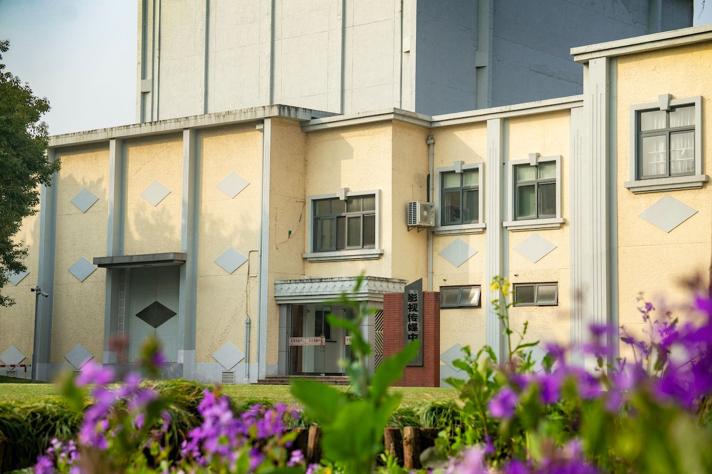
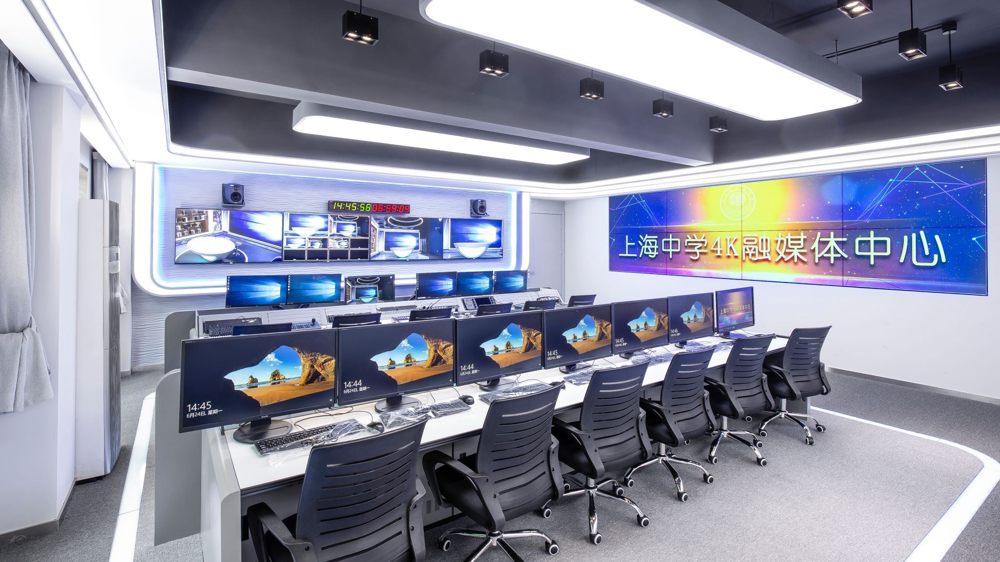

System Integration and Delivery of 4K Converged Media Studio Laboratory
Project Background: As a pilot school for "Exploring the Establishment of Top Innovative Talent Cultivation Bases" in Shanghai, the Film and Media Center of Shanghai High School serves as an essential teaching and practice platform in the fields of information science and arts. In this project, our company undertook the core system integration of the Shanghai High School Film and Media Center, covering the overall planning, equipment selection, system integration, debugging, and acceptance of three core functional areas: the 4K Converged Media Studio Laboratory, the Non-linear Editing Laboratory, and the Digital Recording Laboratory.

Figure 1: Exterior View of the Film and Media Center of Shanghai High School1. Project Highlights and Technical Specifications
Built around the 4K Converged Media Studio Laboratory as its core, the center is equipped with ROSS professional video switchers, SONY broadcast-grade studio cameras, and paired with the Vizrt virtual studio system. This setup realizes a complete standard TV program production workflow encompassing shooting, recording, editing, and broadcasting. The studio's camera system is constructed on the SONY 4300 4K platform, ensuring exceptional image quality and color reproduction.
 Figure 2: Panoramic View and Real/Virtual Sets of the 4K Converged Media Studio Laboratory
Figure 2: Panoramic View and Real/Virtual Sets of the 4K Converged Media Studio Laboratory
Non-linear Editing Laboratory and Digital Control System: The laboratory is equipped with HP professional video workstations, SAMSUNG high-resolution monitors, and Pinnacle video capture cards, supporting non-linear editing of digital video and audio as well as creative A/V production. Combined with a large-screen converged media control wall, it enables multi-channel signal monitoring and intensive broadcast control management.

Figure 3: Control Room and Large-Screen Display System of the Shanghai High School 4K Converged Media CenterDigital Recording Laboratory: Based on professional audio industry standards, the core architecture utilizes Avid HD Audio DAW, MAC Pro workstations, and GENELEC studio monitor speakers. It is capable of facilitating various teaching activities such as modern digital recording, mixing technology practice, sound design and creation, and IB music teaching.
2. Customer Feedback and Project Results
Since its delivery, the system has successfully supported numerous tasks, including campus culture news production, interview program recording, film/television education course teaching, and new media creation. The school has spoken highly of the system's outstanding stability, professional-grade audio and video quality, and our team's strong professionalism demonstrated during the technical commissioning process.